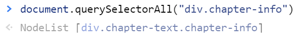

Selektoren
Ein HTML-Dokument besteht aus Elementen, die wiederum Elemente enthalten, oder aber Text.
Um ein HTML-Element mit JavaScript zu manipulieren, musst du dem Programm verständlich machen, welches Element du meinst.
Hier kommen Selektoren ins Spiel.
Sie wählen HTML-Elemente aus, dessen Eigenschaften dann manipuliert oder abgefragt werden können.
Generelle Syntax
Selektoren können nur von HTML-Dokumenten ausgeführt werden.
Es werden nur Elemente innerhalb dieses Elements gesucht und zurückgegeben.
Dieses Eltern-Element muss vorher geschrieben werden,
dann mit einem "." mit dem Selektor verbunden werden:
parentElement.selector(...);
Wenn du überall suchen willst, benutze als Parentelement das Wort "document":
document.selector(...);
GetBy-Selektoren
Es gibt eine Reihe von Selektoren, die die Suche nach einer bestimmten Eigenschaft ermöglichen.
Man erkennt sie an der Phrase "getElementsBy...".
Sie sind sehr selbsterklärend.
| getElementById("demo") |
Gibt das Element mit der ID "demo" zurück. |
| getElementsByClassName("demo") |
Gibt alle Elemente mit der Klasse "demo" als HTML-Collection zurück. |
| getElementsByTagName("demo") |
Gibt alle Elemente mit dem Tag "demo" als HTML-Collection zurück. |
Funktioniert nicht?
Stelle sicher, dass du den Selektor "getElementById" ohne das "s" nach "Element" schreibst.
Dieser Selektor gibt nämlich nur 1 Element zurück, da IDs eindeutig sein müssen.
Die anderen Selektoren dieser Art werden mit dem "s" nach dem Wort "Element" geschrieben.
Sie geben eine HTML-Collection zurück.
Query-Selektoren
Das interessante an dieser Art von Selektor ist, dass man Selektionen kombinieren kann.
Sie erlauben einem nicht nur nach einer Eigenschaft zu suchen,
sondern nach allen gleichzeitig, sogar nach anderen Atributen, als "class" und "id".
Um das umzusetzen wurde die CSS-Syntax gewählt.
Dementsprechend stehen auch alle Möglichkeiten eines CSS-Selektors zur Verfügung.
querySelector
Dieser Selektor gibt nur ein Element zurück.
Er ist eine Funktion, hat also einen Input,
welcher, wie du sicher schon weisst, die gleiche Syntax hat wie ein CSS-Selektor.
Er stoppt die Suche nach dem ersten Fund und gibt dieses Element zurück.
Findet er keins, gibt er den Wert "undefined" zurück.
document.querySelector("tag.class#id[attribute=value]");
Dieser Selektor wird ein Element suchen, der
als TagName "tag",
als ClassName "class",
als ID "id" und
das Attribut "attribute" mit dem Wert "value"
hat.
querySelectorAll
Dieser Selektor gibt alle gefundenen Elemente zurück.
Diese Funktion besitzt die gleiche Art von Input, wie die Funktion querySelector.
Der Selektor schreibt alle Elemente in eine Art Array, also geordnete Liste. Sie heisst NodeList.
Findet er keins, ist die NodeList leer.
Beispiel einer NodeList

Welchen soll ich benutzen?
Es erleichtert dir das Leben, wenn du dich auf die Query-Selektoren konzentrierst.
Sie bieten viel mehr Möglichkeiten und decken die Funktionen der GetBy-Selektoren vollends ab.
Ausserdem ist eine NodeList deutlich einfacherer zu benutzen als eine HTML-Collection,
da sie praktische Methoden wie .forEach bereitstellt.